Manual de usuario: el agente de inteligencia artificial que atiende, confirma y agenda las reservas de tu negocio, por chat, las 24 horas.
RestaurantesBarberíasSalones de bellezaSpasOdontologíaClínicasFisioterapiaVeterinariasTalleres mecánicosAcademiasGimnasios
Versión del documento: septiembre 2026 · v2
Contenido
Índice
Guía completa de funcionalidades, rubros y planes comerciales.
01¿Qué es ReservasIA?Propuesta de valor y para quién es
02Cómo funcionaEl recorrido de una reserva, en simple
03Adaptado a cada rubroQué pregunta el agente según tu negocio
04El panel de control (Resumen)Estadísticas y reportes del negocio
05ReservasLista, calendario semanal y creación manual
06ClientesHistorial, notas y datos de contacto
07Servicios y RecursosEl catálogo que usa el agente
08Agente de IAPersonalidad, reglas y vista previa
09InboxConversaciones en vivo por canal
10EquipoAccesos por rol
11Configuración y aparienciaDatos del negocio, tema claro/oscuro
12Seguridad y privacidadAislamiento de datos por negocio
13Planes y precios sugeridosComparables de mercado
14Preguntas frecuentesDudas típicas de un dueño de negocio
15ReferenciasFuentes citadas en normas APA
01. Introducción
¿Qué es ReservasIA?
ReservasIA es una plataforma que le da a cualquier negocio con reservas o turnos un agente de inteligencia artificial propio, que atiende a sus clientes por Telegram o WhatsApp, responde preguntas sobre horarios y precios, y crea, cancela o reprograma reservas consultando la disponibilidad real del negocio, sin que nadie del equipo tenga que estar pendiente del chat.
¿Para qué tipo de negocio sirve?
Cualquier negocio que trabaje con turnos, citas o reservas de tiempo limitado:
Restaurantes
Barberías y peluquerías
Salones de belleza
Spas y centros de estética
Consultorios odontológicos
Clínicas y consultorios médicos
Fisioterapia y rehabilitación
Veterinarias
Talleres mecánicos
Academias y clases
Gimnasios y estudios
Y cualquier negocio con turnos
El problema que resuelve
La mayoría de estos negocios hoy pierden reservas y tiempo por:
Mensajes de WhatsApp/Telegram sin responder fuera del horario de atención.
Tiempo del dueño o el equipo perdido coordinando turnos manualmente uno por uno.
Dobles reservas por errores humanos al anotar en una agenda de papel o una hoja de cálculo.
Clientes que se olvidan del turno porque nadie les recuerda.
Lo que gana el negocio
Atención automática 24/7, sin contratar a nadie nuevo.
Cero dobles reservas: el sistema lo bloquea a nivel de base de datos, no solo en la pantalla.
Un panel de control único para ver reservas, clientes, conversaciones y el rendimiento del negocio.
El agente nunca inventa precios, horarios ni promociones: todo sale de datos reales que el negocio configura.
Idea clave: el dueño del negocio configura su información una sola vez (servicios, precios, horarios, tono del agente) y a partir de ahí todo funciona solo: el agente cita esos datos reales en cada conversación.
02. Concepto
Cómo funciona, en simple
No hace falta entender de tecnología para usar ReservasIA. Así se ve el recorrido completo de una reserva:
Cliente escribe por Telegram/WhatsApp
→
El agente responde y consulta disponibilidad real
→
Pide confirmación antes de reservar
→
Reserva creada + invitación a Google Calendar
→
El negocio recibe una notificación
Tres piezas, un solo panel
El agente
Conversa con tus clientes, en el idioma y tono que definas. Sigue reglas estrictas: nunca inventa nada, siempre confirma antes de actuar.
El panel web
Donde el negocio ve y gestiona todo (reservas, clientes, conversaciones, reportes) desde el celular o la computadora.
Las integraciones
Telegram, WhatsApp y Google Calendar conectados de forma independiente, cada negocio con sus propias credenciales.
Es además una PWA (Progressive Web App): se puede instalar como una app normal en el celular o la computadora, sin pasar por ninguna tienda de aplicaciones. Todo el panel es responsivo: se adapta a pantalla de celular igual de bien que a computadora.
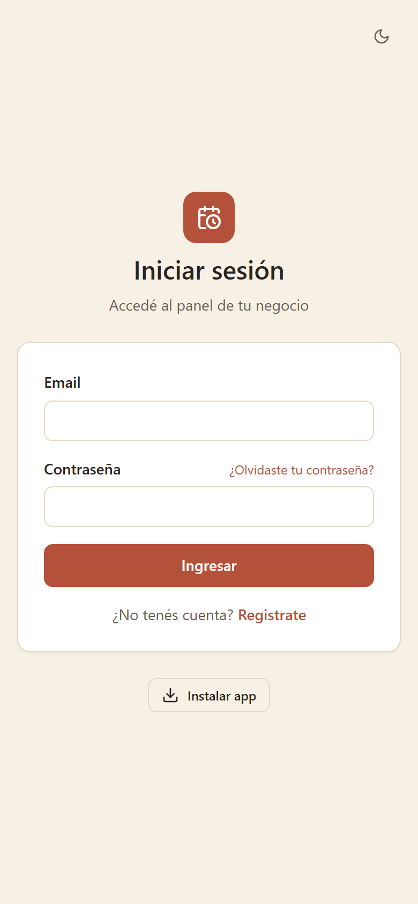
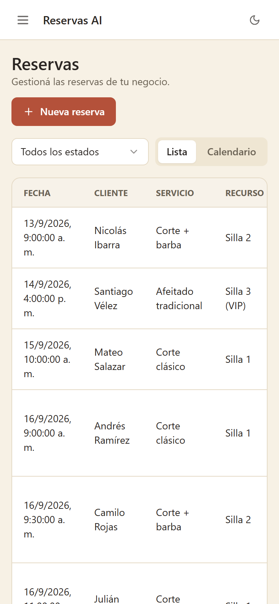
La misma plataforma, instalada y usada desde el celular.
03. Hecho para tu rubro
Un agente que entiende tu rubro
El motor de reservas es el mismo para todos los negocios, pero el agente sabe qué datos importan en cada rubro: los pregunta de forma natural durante la conversación y los deja anotados en la reserva, para que el equipo los tenga a mano sin volver a preguntar.
Qué pregunta y qué nunca hace, según el rubro
Rubro
Qué pregunta y anota
Lo que nunca hace
Consultorio odontológico
Motivo de la consulta y si es paciente nuevo. Si hay dolor fuerte o un diente roto, ofrece el turno más cercano.
Dar diagnósticos o recomendar medicamentos.
Clínica o consultorio médico
Motivo de la consulta.
Diagnosticar, o agendar una emergencia como un turno normal.
Fisioterapia y rehabilitación
Zona o motivo (rodilla, espalda, posoperatorio). A los pacientes nuevos les ofrece primero la valoración inicial.
Indicar ejercicios o tratamientos.
Veterinaria
Nombre del dueño, nombre y especie de la mascota, y raza o edad si el cliente las menciona.
Recetar o dar dosis. Ante una emergencia de la mascota, indica ir de inmediato.
Taller mecánico
Marca, modelo y placa del vehículo, y qué problema tiene o qué servicio necesita.
Dar diagnósticos definitivos o precios que no estén en el catálogo.
Academia o clases
Nombre y nivel o edad del estudiante (muchas veces escribe una madre o un padre). Ofrece la clase de prueba a quien consulta por primera vez.
Aceptar más alumnos que el cupo de cada horario.
Los datos que anota el agente aparecen en cada reserva, tanto en la vista de lista como en el calendario.
Salud primero: en consultorios, fisioterapia y veterinarias, el agente nunca reemplaza al profesional. Si alguien describe una emergencia (dolor en el pecho, dificultad para respirar, un accidente), no la agenda como un turno: le indica que llame a la línea de emergencias o vaya a urgencias de inmediato. Es una regla de la plataforma y no depende de la configuración de cada negocio.
Arranque rápido: servicios sugeridos por rubro
Al crear la cuenta, el asistente de configuración precarga los servicios típicos del rubro elegido. El dueño solo ajusta nombres y duraciones, pone sus precios y borra lo que no ofrece.
Odontología
Valoración inicial30 min
Limpieza dental45 min
Resina / calza60 min
Blanqueamiento60 min
Urgencia30 min
Veterinaria
Consulta general30 min
Vacunación20 min
Desparasitación20 min
Baño y peluquería90 min
Control posoperatorio20 min
Taller mecánico
Diagnóstico general60 min
Aceite y filtros45 min
Revisión de frenos90 min
Alineación y balanceo60 min
Mantenimiento preventivo120 min
Fisioterapia
Valoración inicial60 min
Sesión de fisioterapia45 min
Terapia deportiva60 min
Drenaje linfático60 min
Academia
Clase de prueba60 min
Clase individual60 min
Clase grupal90 min
Clínica
Consulta general30 min
Control20 min
Clases grupales con cupo
Academias y gimnasios pueden definir un cupo por horario (por ejemplo, 10 alumnos por clase). El agente acepta reservas hasta completar el cupo y, cuando se llena, ofrece otros horarios disponibles. Para clases individuales, cada profesor se carga como un recurso y el agente nunca le asigna dos alumnos al mismo tiempo.
04. El panel de control
1Resumen: el estado del negocio de un vistazo
Es la primera pantalla que ve el dueño del negocio al entrar. Responde, sin tener que buscar nada, la pregunta "¿cómo va mi negocio hoy?".
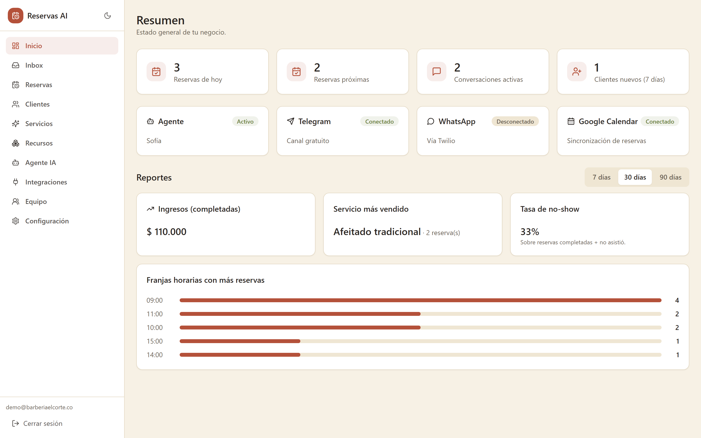
Pantalla de Resumen, con estadísticas del día y reportes del negocio.
Qué muestra
Reservas de hoy y reservas próximas pendientes o confirmadas.
Conversaciones activas que el agente está manejando en este momento.
Clientes nuevos en los últimos 7 días.
Estado del agente de IA y de cada canal conectado (Telegram, WhatsApp, Google Calendar) de un vistazo.
Reportes del negocio
Con un selector de período (7 / 30 / 90 días), el dueño puede ver:
Ingresos de las reservas completadas en el período, separados por moneda.
Servicio más vendido, para saber qué promocionar.
Tasa de no-show: cuántos clientes reservaron y no llegaron.
Franjas horarias con más reservas, para saber cuándo el negocio está más ocupado y planear personal y recursos.
05. Núcleo del producto
2Reservas: lista, calendario y carga manual
Acá vive el corazón del negocio: todas las reservas, creadas por el agente o manualmente por el equipo.
Vista de lista
Todas las reservas con filtro por estado (pendiente, confirmada, completada, cancelada, no asistió), cliente, servicio y recurso asignado, junto con las notas que dejó el agente (por ejemplo, la placa del vehículo o el nombre de la mascota). Cada reserva tiene botones de acción según su estado: completar, marcar como no-show, cancelar, o eliminar una vez cerrada.
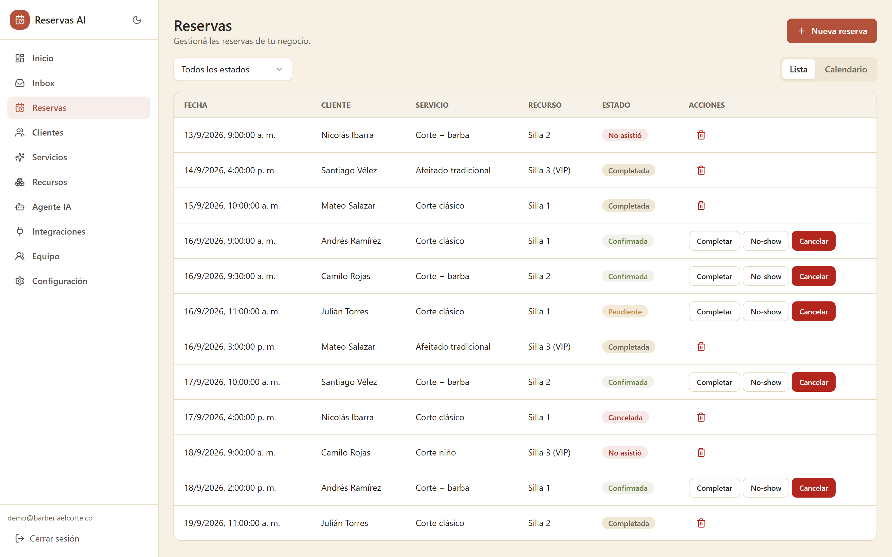
Vista de lista, con filtro por estado y acciones rápidas por fila.
Vista de calendario semanal
La misma información, pero organizada visualmente por día y hora, ideal para ver de un vistazo qué tan ocupada está la semana. Las reservas que se superponen en horario (por ejemplo, dos sillas o dos consultorios ocupados al mismo tiempo) se acomodan automáticamente en columnas, y las canceladas o no-show se distinguen con un borde punteado y el horario tachado, no solo por color, así cualquier persona las identifica sin confundirlas con una reserva activa.
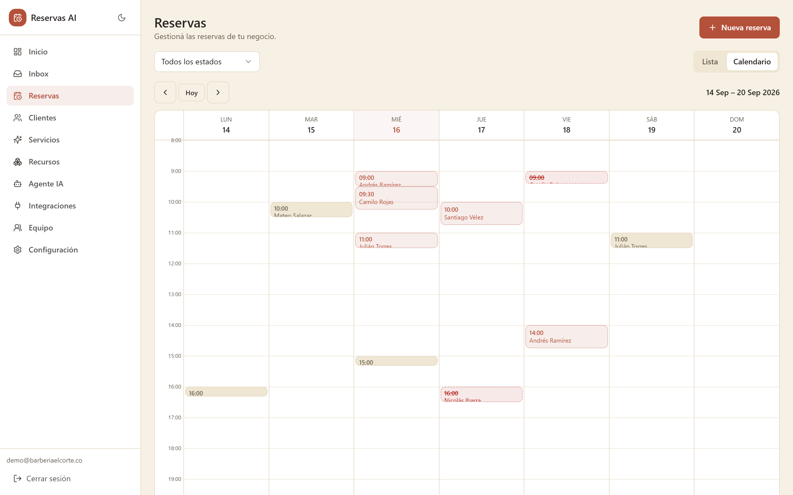
Vista de calendario semanal, con navegación por semana y detalle al hacer clic en una reserva.
Crear una reserva manualmente
El equipo también puede cargar una reserva a mano desde el panel (por ejemplo, si un cliente llama por teléfono), eligiendo servicio, recurso, fecha y hora, con las mismas validaciones y protección contra dobles reservas que usa el agente.
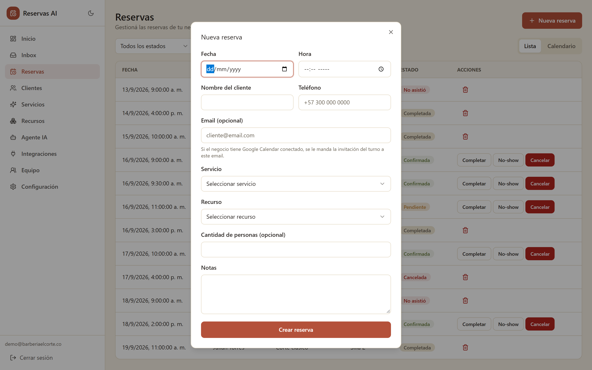
Formulario de carga manual de una reserva nueva.
06. Relación con el cliente
3Clientes
Cada persona que le escribe al agente queda registrada automáticamente, con su historial completo de reservas.
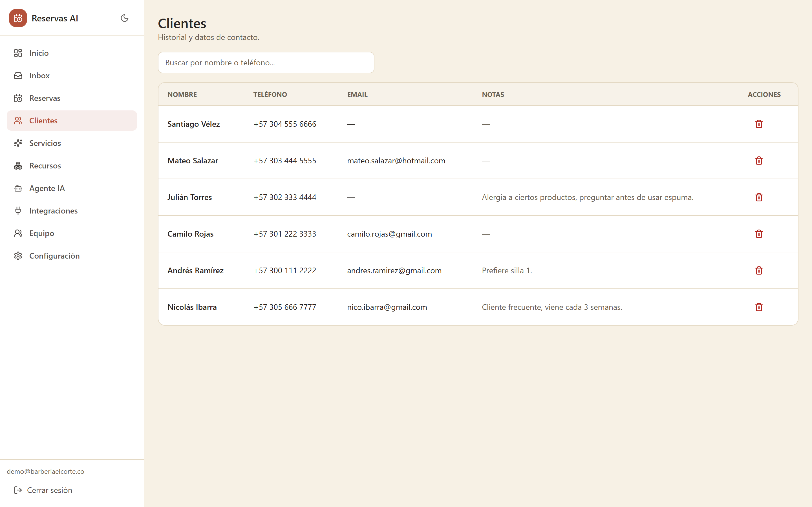
Listado de clientes con búsqueda por nombre o teléfono.
Qué se puede hacer
Buscar un cliente por nombre o número de teléfono.
Ver y editar su nombre, email y notas internas (ej. preferencias, alergias, observaciones del equipo).
Ver el historial completo de reservas de ese cliente en un panel de detalle.
El email que se cargue es el que se usa para invitarlo automáticamente a su turno en Google Calendar.
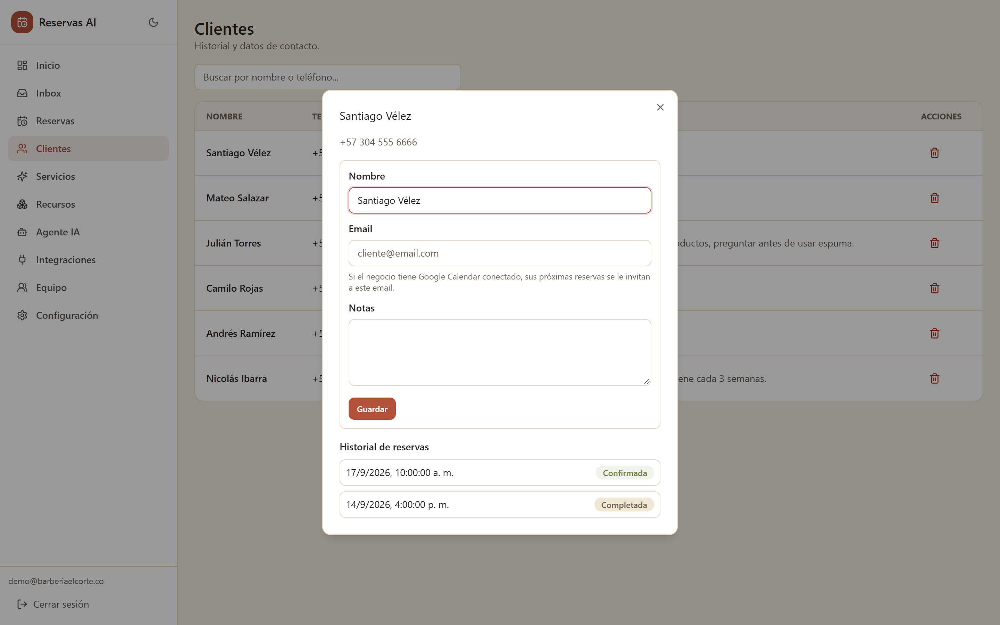
Panel de detalle de un cliente, con sus datos y su historial de reservas.
07. El catálogo del negocio
4Servicios y Recursos
Esta es la información que el agente usa para responder con datos reales: nunca inventa un precio o una duración que no esté cargada acá.
Servicios
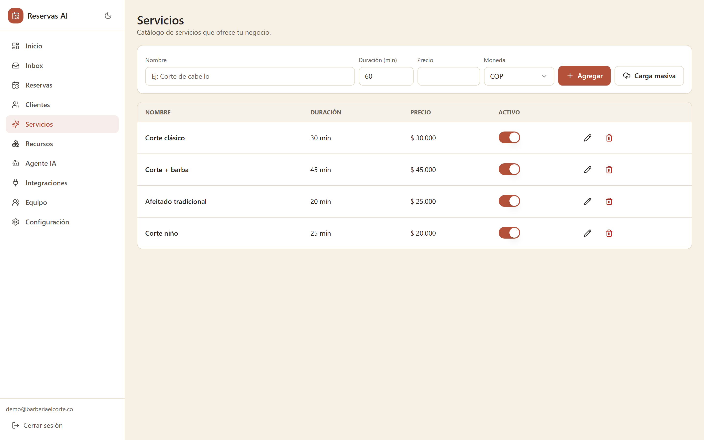
Catálogo de servicios: nombre, duración, precio y moneda, con edición en línea.
Alta, edición y baja de servicios (nombre, duración, precio, moneda).
Servicios sugeridos por rubro al crear la cuenta (ver sección 03), para no arrancar de cero.
Carga masiva por Excel: para negocios con muchos servicios, se puede subir una planilla en vez de cargar uno por uno, con plantilla descargable y vista previa de errores antes de confirmar.
Activar/desactivar un servicio sin borrarlo (por ejemplo, una promoción de temporada).
Recursos
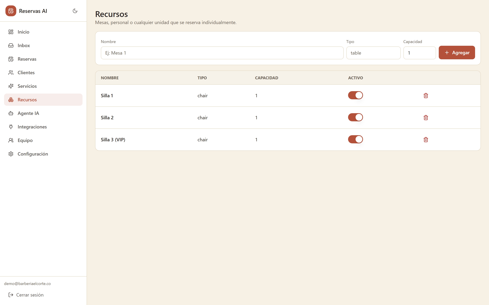
Recursos individuales que se reservan (mesas, sillas, consultorios, bahías, personal).
Mesas, sillas, consultorios, bahías del taller, profesionales: cualquier unidad que atienda a un cliente por horario.
El motor de disponibilidad usa esto para no agendar nunca dos clientes al mismo tiempo en el mismo recurso.
Para clases grupales no hacen falta recursos: se define un cupo por horario (ver sección 03).
08. El corazón de la IA
5Agente de IA
Acá el negocio personaliza cómo se comporta su agente, sin escribir una sola línea de código.
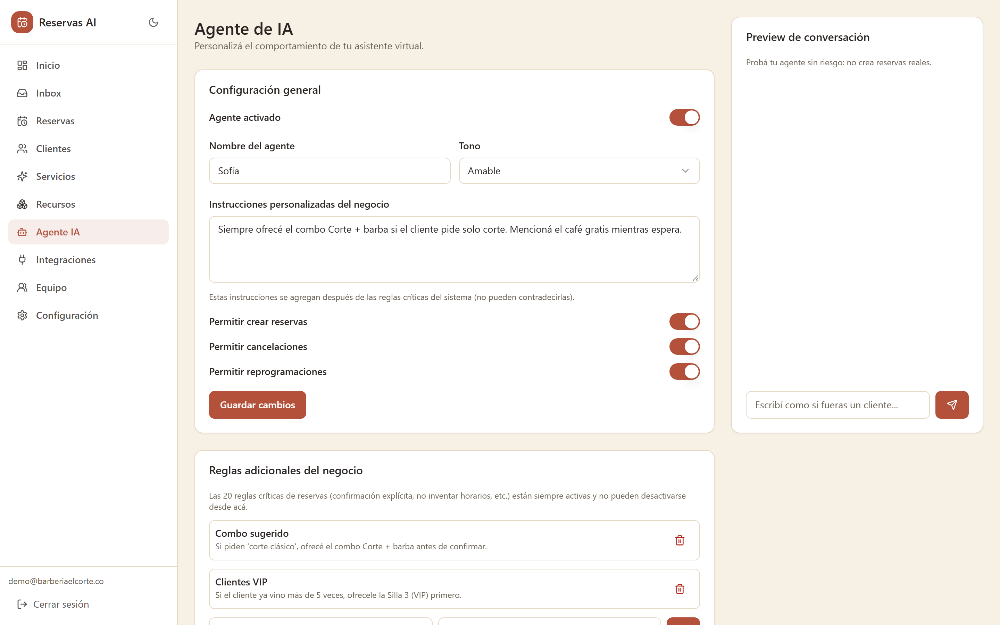
Configuración del agente, reglas del negocio y vista previa de conversación.
Qué se configura
Nombre y tono del agente (formal, casual o amable).
Instrucciones propias del negocio (ej. "siempre ofrecé el combo antes de confirmar solo el corte").
Permisos: si el agente puede crear reservas, cancelarlas y/o reprogramarlas.
Reglas adicionales: sin límite, se agregan las que el negocio necesite.
Guía por rubro incluida: según el tipo de negocio, el agente ya sabe qué datos pedir y qué límites respetar (ver sección 03).
Vista previa sin riesgo
El panel incluye un chat de prueba donde el dueño puede escribirle al agente como si fuera un cliente, para probar el tono y las instrucciones, sin crear ninguna reserva real.
Reglas que nunca cambian: el agente jamás inventa horarios, precios ni servicios (todo sale de datos reales), y siempre pide confirmación explícita antes de reservar, cancelar o reprogramar. Esto no se puede desactivar desde la configuración.
09. Cuando hace falta un humano
6Inbox
Todas las conversaciones que el agente sostiene con los clientes, organizadas por canal, con el historial completo.
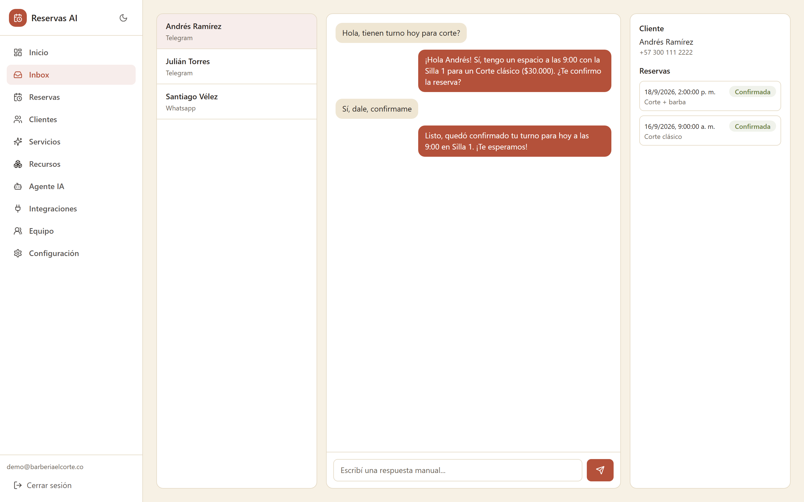
Bandeja de conversaciones, hilo de mensajes e información del cliente en un mismo lugar.
Lista de conversaciones con el nombre del cliente y el canal (Telegram/WhatsApp).
Historial completo de mensajes, diferenciando lo que dijo el cliente de lo que respondió el agente.
Información del cliente y sus reservas recientes, visible sin salir de la conversación.
Respuesta manual: si hace falta que una persona del equipo intervenga, puede escribir directamente desde acá.
10. Accesos
7Equipo
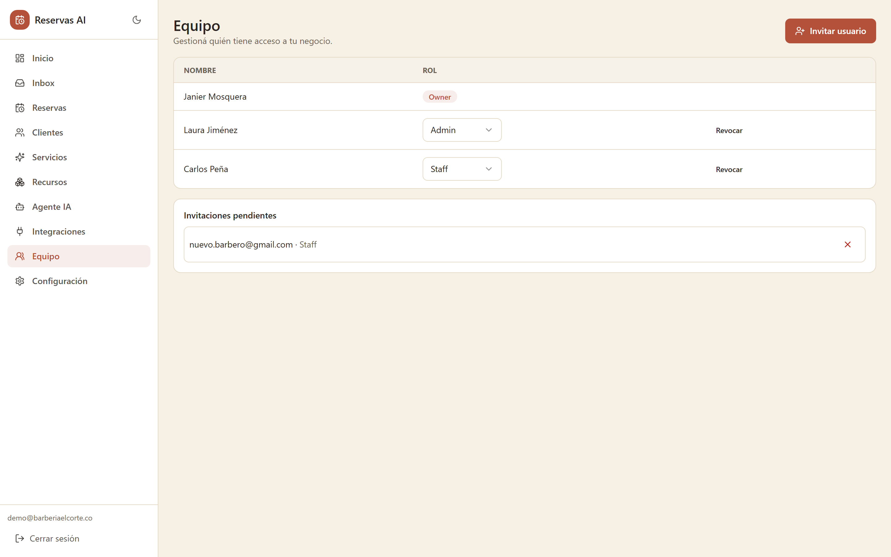
Gestión de accesos del equipo por rol.
Invitar personas por email con rol admin o staff.
Cambiar roles o revocar el acceso de alguien del equipo.
La organización siempre conserva al menos un dueño (owner): nunca se puede quedar sin nadie a cargo.
11. Datos del negocio
8Configuración y apariencia
Los datos operativos que usan tanto el motor de disponibilidad como el agente: horarios, moneda, política de cancelación, cupo por horario, notificaciones.
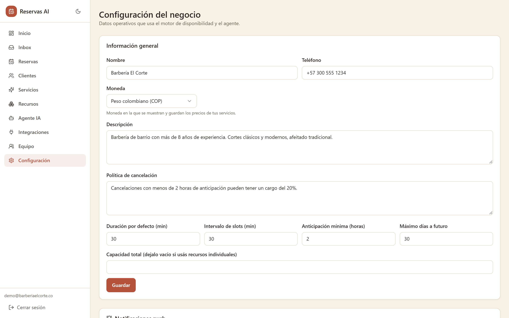
Configuración general del negocio y horarios de atención.
Tema claro y oscuro
Pensado para negocios donde el equipo pasa muchas horas frente a la pantalla: se puede cambiar entre un tema claro y uno oscuro con un clic, disponible en toda la aplicación.
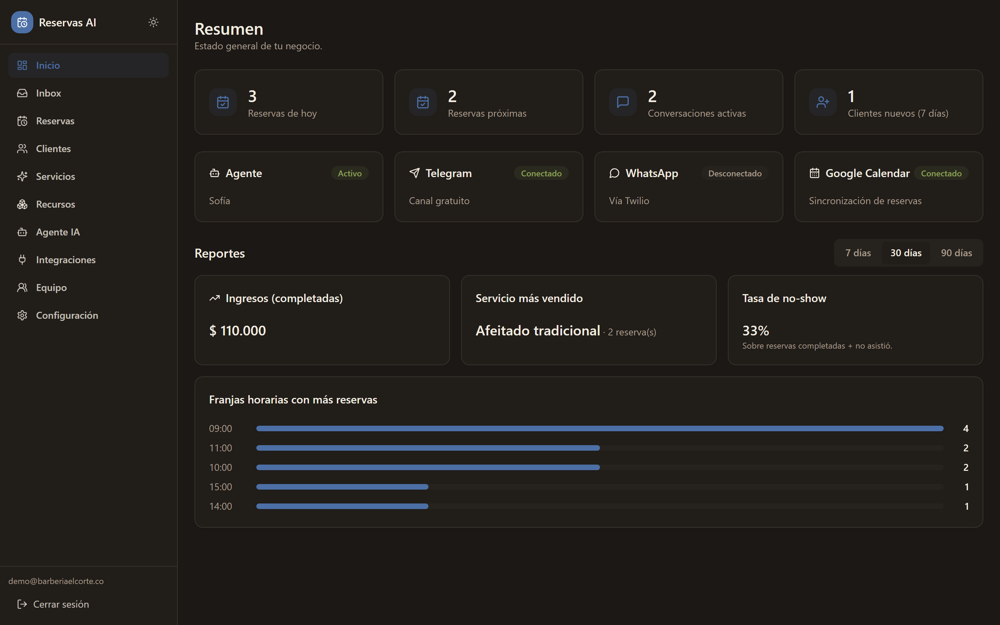
Detalle de diseño
Los colores del modo oscuro fueron elegidos pensando en accesibilidad: el color principal cambia a un azul que se distingue con claridad del verde ("éxito") y el rojo ("cancelado") para personas con daltonismo, no es solo un cambio estético.
12. Confianza
Seguridad y privacidad de los datos
Un punto habitual de duda para cualquier negocio que va a confiarle sus datos de clientes a una plataforma nueva:
Cada negocio ve solo sus propios datos. La plataforma es multi-tenant: aunque muchos negocios distintos usen la misma aplicación, el aislamiento entre ellos se garantiza a nivel de base de datos (no solo con un filtro en la pantalla, que se podría evadir).
Prevención de dobles reservas real, aplicada por la base de datos misma, no depende de que la pantalla esté bien programada.
Credenciales de integraciones aisladas por negocio (el token de Telegram o las claves de Twilio de un negocio nunca son visibles ni accesibles para otro).
Roles y permisos claros: el personal ("staff") no tiene por qué ver la misma información que el dueño o un administrador.
Límites fijos en salud: en consultorios, fisioterapia y veterinarias el agente nunca da diagnósticos ni recomienda medicamentos.
Comunicación cifrada (HTTPS) en toda la plataforma.
13. Comercial
Planes y precios sugeridos
Referencia para definir precios de lanzamiento, calibrada contra el mercado de software de reservas y de agentes de IA para negocios chicos.
Comparables del mercado
Producto
Precio
Modelo
CitaFlow (chatbot IA WhatsApp/Telegram)
desde $14 USD/mes
Suscripción
SimplyBook.me
$0 – €59.9/mes
Suscripción por funciones
Fresha
$14.95–19.95 USD/mes por usuario
Suscripción + 20% comisión primera visita
Booksy
$29.99 USD/mes + $20/usuario extra
Suscripción
ReservaSimple (foco LatAm)
Gratis hasta 30 reservas/mes
Freemium
Rango general del mercado para negocios chicos: entre $20 y $100 USD/mes según funciones y volumen.
Planes sugeridos para el lanzamiento
Básico
$15–20 USD/mes
≈ 60.000–80.000 COP/mes
Canal Telegram
Agente de IA configurable, con guía por rubro
Google Calendar
Panel completo (reservas, clientes, reportes)
Recomendado
Pro
$25–30 USD/mes
≈ 100.000–120.000 COP/mes
Todo lo del plan Básico
Canal WhatsApp (Twilio)
Más de un usuario del equipo
Soporte prioritario
Estrategia de lanzamiento sugerida: ofrecer un descuento de "cliente fundador" (30–40% durante los primeros meses, o el primer mes gratis) a cambio de feedback y autorización para usarlos como caso de referencia. Así se consiguen los primeros testimonios sin regalar el producto de forma indefinida.
14. Preguntas frecuentes
Preguntas frecuentes
¿Necesito saber de tecnología para usarlo?
No. Configurar el negocio y el agente se hace desde el panel web, sin escribir código.
¿Sirve para mi consultorio, veterinaria, taller o academia?
Sí. Al crear la cuenta elegís tu rubro y la plataforma precarga servicios típicos. El agente, además, pregunta los datos propios de tu negocio (el motivo de la consulta, la mascota, la placa del vehículo, el nombre del estudiante) y los deja anotados en la reserva.
¿El agente puede dar un diagnóstico o recomendar un medicamento?
No. En consultorios, fisioterapia y veterinarias es una regla fija de la plataforma: el agente solo agenda. Si alguien describe una emergencia, le indica que llame a la línea de emergencias o vaya a urgencias en vez de darle un turno.
¿Qué pasa si todavía no tengo WhatsApp Business?
No hace falta para empezar. Se puede operar 100% con Telegram, que es gratuito, y activar WhatsApp más adelante cuando el negocio lo necesite.
¿El agente puede inventar un precio o un horario que no existe?
No. Es una regla del sistema que no se puede desactivar: el agente solo puede responder con información real, cargada por el negocio.
¿Mis datos y los de mis clientes están seguros?
Sí. Cada negocio tiene sus datos completamente aislados de los demás negocios que usan la plataforma, y las comunicaciones viajan cifradas.
¿Puedo instalarlo como una app en el celular?
Sí, es una Progressive Web App: se instala desde el navegador en Android, iOS o computadora, sin pasar por ninguna tienda de aplicaciones.
¿Qué pasa si necesito cambiar algo que el agente no puede resolver?
Cualquier persona del equipo puede responder manualmente desde el Inbox en cualquier momento, sin que eso interrumpa el resto del sistema.
15. Referencias
Referencias
Fuentes consultadas para la comparación de precios de mercado de la sección 13.
Capterra. (2026). Booksy Biz software pricing, alternatives & more. Recuperado en septiembre de 2026, de https://www.capterra.com/p/142741/Booksy/
CitaFlow. (2026). AI chatbot: WhatsApp & Telegram bookings 24/7. Recuperado en septiembre de 2026, de https://citaflow.com/en/chat-ai/
FinancesOnline. (2026). Fresha vs Booksy 2026 comparison. Recuperado en septiembre de 2026, de https://comparisons.financesonline.com/fresha-vs-booksy
ReservaSimple. (2026). Mejores plataformas de turnos en Latinoamérica. Recuperado en septiembre de 2026, de https://www.reservasimple.com/mejores-plataformas-gestionar-turnos-latinoamerica
SimplyBook.me. (2026). Pricing. Recuperado en septiembre de 2026, de https://simplybook.me/en/pricing
Twizzlo. (2026). Fresha vs Booksy: Real pricing and fees compared. Recuperado en septiembre de 2026, de https://twizzlo.com/articles/fresha-vs-booksy/
¿Listo para empezar?
Contactá a Nexora para activar tu negocio hoy mismo.
Manual de usuario de ReservasIA. Documento preparado con fines comerciales y de onboarding. Las imágenes de este documento fueron tomadas directamente de la interfaz real del proyecto, con datos de ejemplo de un negocio ficticio ("Barbería El Corte") para ilustrar cada funcionalidad.